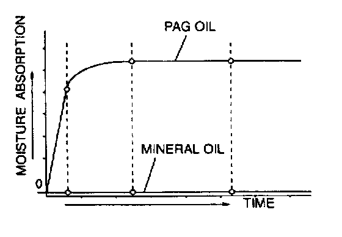

Vehicle Damage Warnings

Handling Compressor Oil
- Use only DENSO 0IL9 compressor oil for this vehicle. Using PAG oil other than DENSO OIL9 compressor oil can damage the A/C compressor.
- Do not spill DENSO OIL9 compressor oil on the vehicle. A drop of compressor oil on the vehicle surface can eat away at the paint. If oil gets on the vehicle, wipe it off immediately.
- PAG oil has a higher moisture absorption efficiency than the previously used mineral oil. If moisture mixes with the compressor oil, the refrigerant system could be damaged. Therefore, install caps immediately after using the compressor oil or removing refrigerant system parts to prevent moisture absorption.